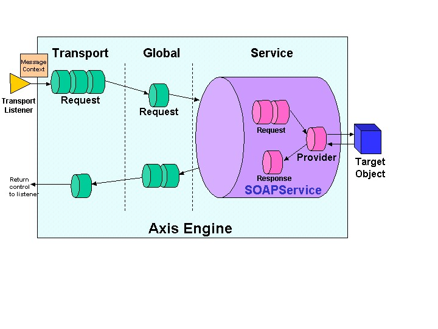

Axis consists of several subsystems working together. In this section we'll give you an overview of how the package works, but for more details please see the Axis Architecture Guide, a separate document.
Put simply, Axis is all about processing Messages. When the central Axis processing logic runs, a series of Handlers are each invoked in order. The particular oder is determined by two factors - deployment configuration and whether the engine is a client or a server. The object which is passed to each Handler invocation is a MessageContext. A MessageContext is a structure which contains several important parts: 1) a "request" message, 2) a "response" message, and 3) a bag of properties. We'll go into a little more detail on this in a bit.
There are two basic ways which Axis is invoked:
In either case, the Axis framework's job is simply to pass the resulting MessageContext through a configurable set of Handlers, each of which has an opportunity to do whatever it is designed to do with the MessageContext. The message path (for the server side) looks like this:

(In the diagram above, each of the small cylinders represents a Handler.)
A message arrives (in some protocol-specific manner) at a Transport Listener. Let's posit that in this case it's an HTTP servlet. It's the Listener's job to package the protocol-specific data into a Message object (org.apache.axis.Message), and put the Message into a MessageContext. The MessageContext is also loaded with various properties by the Listener - in this case, an example would be setting the property "http.SOAPAction" to the value of the SOAPAction HTTP header. The Transport Listener also sets the transportName String on the MessageContext - in this case we set it to "http". Once the MessageContext is ready to go, the Listener hands it into the AxisEngine.
The AxisEngine's first job is to look up the transport by name. This will result in an object which contains a request flow, a response flow, or perhaps both. If a transport request flow exists, it will be invoked, passing the MessageContext into the invoke() method. This will result in calling all the Handlers specified in the request flow configuration.
After the transport request handler, the engine locates a global request flow, if configured (in the <requestFlow> element of the WSDD <globalConfiguration>, as explained in the WSDD deployment section later in this document), and then invokes any Handlers specified therein.
At some point during the processing up until now, some Handler has hopefully set the serviceHandler field of the MessageContext (this is usually done in the HTTP transport by the "URLMapper" Handler, which maps a URL like "http://localhost/axis/services/AdminService" to the "AdminService" service). This field determines the Handler we'll invoke to execute service-specific functionality, such as making an RPC call on a back-end object. Services in Axis are typically instances of the "SOAPService" class (org.apache.axis.handlers.soap.SOAPService), which may contain request and response flows (similar to what we saw at the transport and global levels), and must contain a provider, which is simply a Handler responsible for implementing the actual back end logic of the service.
In typical RPC examples, the provider is the org.apache.axis.providers.java.RPCProvider class. This is just another Handler that, when invoked, attempts to call a backend Java object whose class is determined by the "className" parameter specified at deployment time. It uses the SOAP RPC convention for determining the method to call, and makes sure the types of the incoming XML-encoded arguments match the types of the required parameters of the resulting method.
The Message Path on the client side is similar, except the order of scoping is reversed. In other words:
The service handler, if any, is called first - on the client side, there is no "provider" since the service is being provided by a remote node, but there is still the possibility of request and response flows. The service request and response flows serve to do any service-specific processing of the message on its way out of the system, and also for the response message on its way back to the caller.
After the service request flow, the global requestFlow, if any, is invoked, followed by the transport. The Transport Sender, a special Handler whose job it is to actually perform whatever protocol-specific operations are necessary to get the message to and from the target SOAP server, is invoked to send the message. The response (if any) is placed into the responseMessage field of the MessageContext, and the MessageContext then propagates back up through the response flows - first the transport, then the global, and finally the service.
public static java.util.ResourceBundle getMessageResourceBundle();
public static String getMessage(String key) throws java.util.MissingResourceException;
public static String getMessage(String key, String var) throws java.util.MissingResourceException;
public static String getMessage(String key, String var1, String var2) throws java.util.MissingResourceException;
public static String getMessage(String key, String[] vars) throws java.util.MissingResourceException;
AXIS programmers can work with the resource bundle directly via a call
to JavaUtils.getMessageResourceBundle,
but the getMessage
methods should be used instead for two reasons:
If you have a message with variables, use the syntax "{X}"
where X is
the number of the variable, starting at 0. For example:
You could also call the String array version of getMessage:
The String array version of getMessage
is all that is necessary, but the vast majority of messages will have 0,
1 or 2 variables, so the other getMessage
methods are provided as a convenience to avoid the complexity of the String
array version.
Note that the getMessage methods throw MissingResourceException if the resource cannot be found. And ParseException if there are more {X} entries than arguments. These exceptions are RuntimeException's, so the caller doesn't have to explicitly catch them.
The resource bundle properties file is org/apache/axis/utils/resources.properties.
Entries in the properties file must follow the pattern: <string><2-digit suffix>.
Entries should be ordered in the properties file alphabetically by key.
Entries in the properties file must never be changed. If a code change requires a message change, don't change the existing message; instead create a new entry, incrementing the 2-digit suffix. This must be done for two reasons: 1. You don't know whether the message is being used elsewhere. 2. So the translator only has to be aware of, and translate, the new strings. Without this restriction, every time translators are given the properties file to translate, they would have to translate all strings all the time.
if ( operationName == null )
throw new AxisFault( "No operation name specified" );
We will have to add an entry into org/apache/axis/utils/resources.properties. Something like:
noOperation=No operation name specified.
And change the code to read:
if ( operationName == null )
throw new AxisFault(JavaUtils.getMessage("noOperation"));